来源：知识星球「南半球聊财经」星主 Jason 不跪 当日发帖数量：13 篇（时间跨度 13:27 – 17:03，美西时区）
今日要点速览
今天 Jason 的推送有一条非常清晰的主线：油价重新站上 100 美元，正在重写全球宏观的剧本。围绕这个核心，他从三个层面铺开：
- 货币政策层面——摩根斯坦利把「7 月及全年不加息」的判断，完全挂钩到油价；高油价 = 二次通胀风险 = 美联储更难降息（帖 2）。
- 地缘层面——美国对欧盟启动 301 调查、红海航运被迫绕行好望角、特朗普对伊朗「嘴上 TACO、手上备战」，这些都是把油价往上顶的地缘引信（帖 3、13）。
- 资金与资产配置层面——大行开始据此调仓：JPM 在新兴市场「减仓不撤退」（帖 5），对冲基金两年来最看空加元（帖 6）。
另一条副线是中国：财政部开征离岸信托税（帖 4）、汽车内需疲弱但出口爆发（帖 8、9）、政治局会议预期只做「针对性」而非「大水漫灌」刺激（帖 12）。第三条线是 AI 交易进入下半场：高盛、瑞银都在讨论「AI 的钱最后到底谁赚」——从「烧钱抢算力」转向「每一分钱创造多少价值」（帖 7、11）。
帖 1 · 17:03 · #金融 — 主权财富基金规模十年翻倍
帖子原文
IMF：主权财富基金已成为全球金融中最有影响力的参与者之一。他们目前管理的总资产超过 16 万亿美元，较 2008 年的约 3 万亿美元大幅增长。#金融
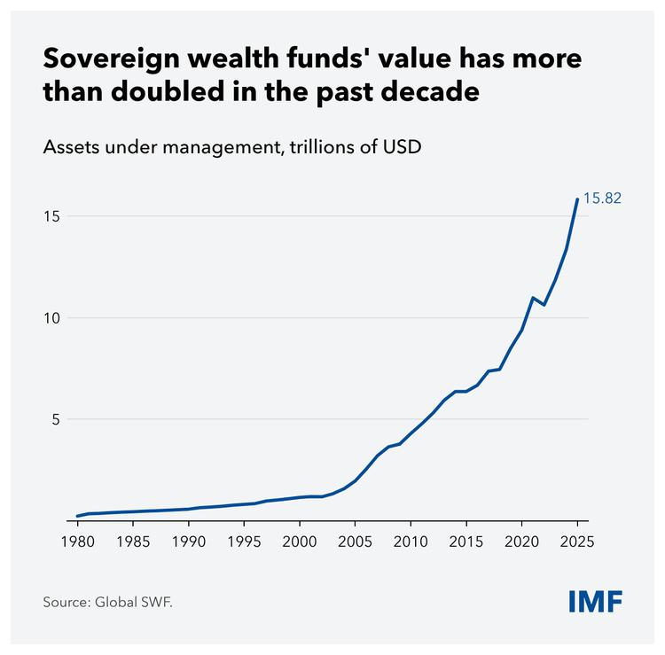
一句话核心：全球「国家队」基金越滚越大，已成为能左右资产价格的巨鲸。
背景与关键数据：主权财富基金（Sovereign Wealth Fund, SWF）是由国家政府设立、用国家外汇储备或资源收入（比如卖石油的钱）去做长期投资的基金。典型代表有挪威政府养老金、阿布扎比投资局、中投公司、新加坡 GIC/淡马锡等。图中显示其管理总资产（AUM）从 1980 年几乎为零，到 2025 年冲到 15.82 万亿美元；2008 年金融危机时约 3 万亿，十几年翻了 5 倍多。
图片解读：这是一张 IMF 引用 Global SWF 数据的折线图。横轴是年份（1980→2025），纵轴是资产规模（万亿美元）。曲线呈「先平后陡」的指数形态：2000 年前几乎贴地，2005 年后开始加速，2020 年后近乎垂直拉升——说明 SWF 的扩张是最近二十年、尤其是高油价与量化宽松时代的产物。曲线在 2021 年附近有一个小回撤（对应当年市场波动），随后继续飙升到 15.82。
为什么重要 / 对市场和经济的含义：SWF 规模越大，意味着一股「不看短期、追求长期回报、对价格不敏感」的巨量资金常驻市场。它们是私募股权、基础设施、科技独角兽的重要金主，也是股债市场的稳定器。Jason 放这条，暗含的观察是：全球定价权正越来越多地握在「国家资本」而非纯私人资本手里，这对理解今天的估值水位很关键。
延伸知识：SWF 的钱从哪来，决定了它的「性格」。产油国的 SWF（如挪威、海湾国家）本质是把不可再生的石油收入转换成可持续的金融资产，这叫「资源诅咒的解药」——把地下的油变成地上的股票债券，避免油枯了国家就穷了。而中国、新加坡这类 SWF 更多来自贸易顺差积累的外储。理解这一点，就能明白为什么油价一涨，海湾 SWF 的「弹药」也跟着变多——这和今天的油价主线是呼应的。
帖 2 · 17:01 · #金融 — 摩根斯坦利：一场关于「耐心」的 FOMC
帖子原文
摩根斯坦利：7 月不加息，2026 年剩余时间也不加息。最近就业和通胀数据已经给了美联储继续等待的理由；但风险明显偏向"利率更高"，最大风险来自油价、AI 投资推高自然利率，以及沃什领导下的美联储可能比我们预想得更鹰。 如果油价 2026 平均 $120，2027 $100。那么 2026 Core PCE 3.1% 左右，我们预估 Fed 可以两年都不降息，一直到 2027 年底仍然维持 3.50%-3.75%。最坏情景：油价 140—160 美元，引发衰退，我们预估 Fed 反而会大幅降息，2026 降息 200bp。终点 1.50%-1.75%。 当前 Fed 最根本的决策树其实可以画得非常简单：油价高，但经济没崩→ Hold。油价高 + 二次通胀明显→ Hike。油价极高 + 经济衰退→ Cut。#金融
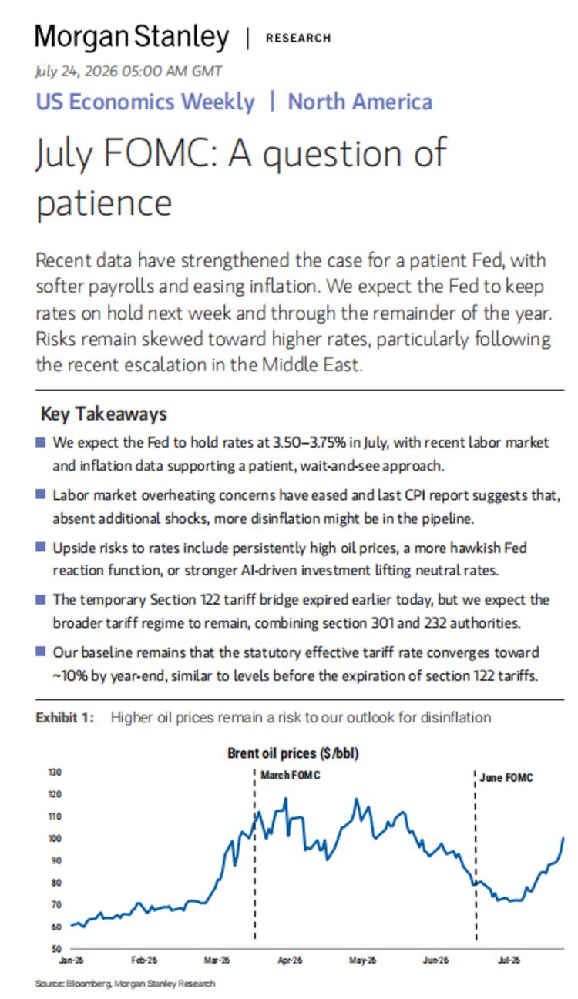
一句话核心：油价成了美联储的「方向盘」，大摩用一张油价决策树把复杂的货币政策讲成了「三选一」。
背景与关键数据：这里几个术语先翻译成大白话——
- FOMC：美联储的利率决策会议（联邦公开市场委员会），一年 8 次，决定加息还是降息。
- Core PCE：核心个人消费支出物价指数，是美联储最看重的通胀标尺（剔除了波动大的食品和能源），3.1% 明显高于美联储 2% 的目标。
- bp（基点）：0.01%。「降息 200bp」= 降 2 个百分点。
- 自然利率 / 中性利率：既不刺激也不压制经济的「理论利率」。AI 大规模投资会提高经济的潜在增速，从而推高中性利率——意思是同样的名义利率，实际上没那么「紧」，Fed 要压制经济就得把利率定得更高。
- 沃什（Kevin Warsh）：市场普遍预期将主导下一届美联储的鹰派人物；「更鹰」= 更倾向维持高利率。
大摩的核心预测：7 月和全年都按兵不动（Hold），利率维持 3.50%-3.75%。分情景——油价年均 120 美元 → 通胀黏在 3.1%，两年都不降息；若油价冲到 140-160 → 经济衰退 → 反而被迫大降息 200bp 到 1.50%-1.75%。
图片解读：这是大摩 7 月 24 日《US Economics Weekly：July FOMC — A question of patience》研报首页。Exhibit 1 是一张 Brent 原油价格（美元/桶）走势图，横轴从 26 年 1 月到 7 月，纵轴 50-130 美元。图上标了两条竖虚线——「March FOMC」和「June FOMC」。可以看到：年初油价约 60 美元 → 3 月 FOMC 前后飙到 110-120（对应中东局势升级）→ 5 月见顶回落 → 6 月 FOMC 后一度跌到 70 出头 → 近期又反弹到接近 100。研报标题「Higher oil prices remain a risk to our outlook for disinflation」直译就是：高油价是通胀回落路上的绊脚石。
为什么重要 / 对市场和经济的含义：这条最值得收藏的是那个决策树——它把一个让无数人头疼的问题（Fed 到底会怎么走）压缩成一句话逻辑：
- 油价高但经济扛得住 → Hold（维持）
- 油价高且二次通胀明显 → Hike（加息）
- 油价高到把经济压垮 → Cut（降息）
对投资者的含义是：盯住油价，就等于盯住了美联储。油价温和高企对股市是「温水」，油价失控才会引发衰退式降息（那对风险资产是先崩后救）。
延伸知识：为什么油价对通胀这么关键？因为石油是「万物之母」——运输、化工、塑料、化肥、发电几乎都离不开它。油价上涨会通过成本一层层传导到几乎所有商品，这叫成本推动型通胀。历史上 1970 年代两次石油危机就直接引爆了美国的「大通胀」，最后逼得美联储主席沃尔克把利率加到近 20% 才压住。所以「油价 → 通胀 → 利率」这条链，是宏观分析里最古老也最可靠的传导链之一。
帖 3 · 16:56 · #其他国家经济 — 美国对欧盟启动 301 调查
帖子原文
zerohedge：美国对欧盟启动 301 调查，欧盟尝试干预俄罗斯的影子油轮。#其他国家经济
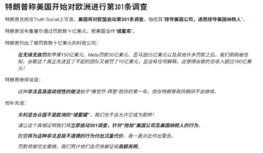
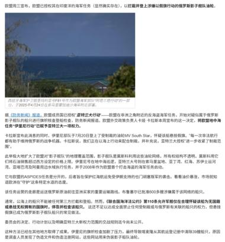
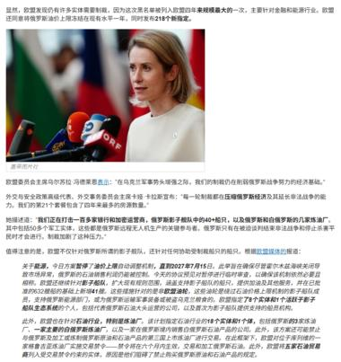
一句话核心：美国以「欧盟干预俄罗斯影子油轮」为由启动 301 贸易调查，把「制裁俄油」变成了美欧之间的新摩擦点。
背景与关键数据：
- 301 调查：美国《1974 年贸易法》第 301 条授权美国贸易代表（USTR）对「不公平贸易行为」发起调查，是特朗普政府惯用的关税大棒工具（当年对华贸易战就是靠它）。这次罕见地把矛头指向盟友欧盟。
- 影子油轮（Shadow Fleet）：指俄罗斯为规避西方制裁、绕过 60 美元/桶价格上限，用一批产权不透明、保险来路不明、频繁换旗的老旧油轮偷运石油。欧盟一直想拦截、检查这些油轮。
- 图中提到欧盟正推进第 21 轮对俄制裁，包括针对约 400 多艘影子油轮的封锁，并对「帮助俄罗斯的第三国实体」下手；美国则以此为由反过来调查欧盟。
图片解读：四张图是 zerohedge 一篇长文的连续截图。
- 图 1（帖 post3_img1）：标题《特朗普称美国开始对欧洲进行第 301 条调查》，讲特朗普在 Truth Social 上发文，指控欧盟针对第三国、以及「储蓄库」（可能指涉及对俄能源的机制）。
- 图 2（post3_img2）：一张乌克兰遭俄罗斯大规模导弹袭击后的废墟照片（消防员在瓦砾中作业），配文谈俄乌冲突升级、乌克兰在国际展会展示新武器系统。
- 图 3（post3_img3）：一张海边照片，讲欧盟在印度洋海军任务中拦截、登船检查俄罗斯影子油轮的行动（代号 ASPIDES），以及俄方的反制。
- 图 4（post3_img4）：欧盟外交与安全政策高级代表卡娅·卡拉斯（Kaja Kallas）在话筒前发言的照片，谈欧盟第 21 轮制裁将把俄影子油轮清单扩大到 400 多艘、并涉及石油价格上限调整。
为什么重要 / 对市场和经济的含义：这条是今天「油价主线」的地缘引信之一。逻辑链是：欧盟收紧对俄影子油轮 → 俄油出口受阻 → 全球原油供给边际收紧 → 油价承压上行；同时美欧因制裁方式起摩擦 → 西方阵营出现裂痕，增加了地缘不确定性。对市场而言，任何「俄油供给受限」的消息都是油价的上行催化剂，进而回到帖 2 的美联储决策树。
延伸知识：所谓「价格上限（Price Cap）」机制，是 G7 在 2022 年推出的对俄制裁创新——不禁止买俄油，而是规定只有以低于 60 美元/桶成交的俄油，才能用西方的航运和保险服务。本意是「既压俄罗斯收入、又不让全球油价飙升」。但俄罗斯用影子油轮绕开了西方保险体系，让上限形同虚设。这就是为什么现在焦点转向「拦截油轮」这种更硬的物理手段——也因此更容易擦枪走火、推高油价。
帖 4 · 16:49 · #TAX — 中国对离岸信托开征税
帖子原文
bloomberg：中国收紧离岸信托税收空间，由这些信托持有或控制的海外实体产生的利润将按年以财产转让收入或利息、股息和奖金收入征税。这是土地收入下滑的连锁反应。#TAX
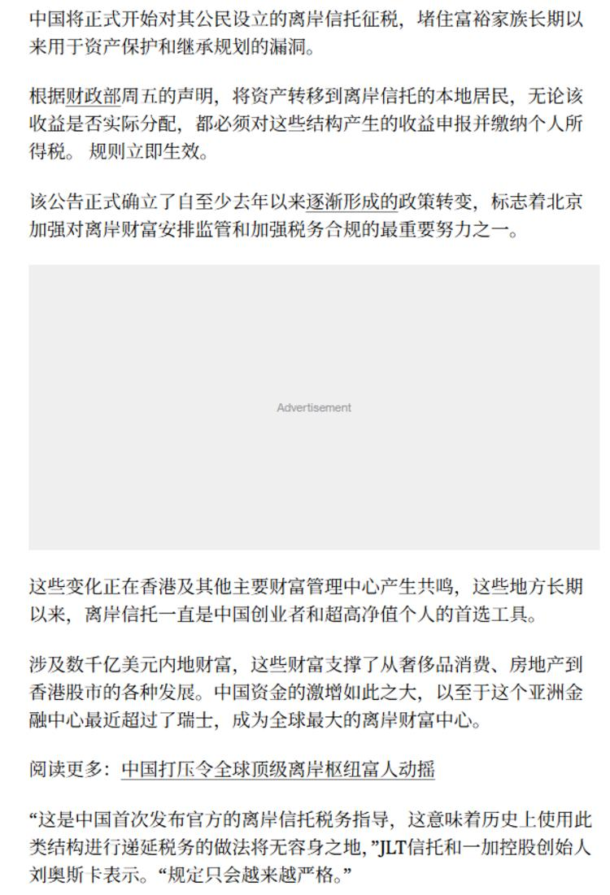
一句话核心：中国首次对富人常用的「离岸信托」避税结构下手，堵漏洞、找新税源，背后是地方财政缺钱。
背景与关键数据：
- 离岸信托（Offshore Trust）：高净值人群把资产（股权、房产、现金）装进设立在开曼、BVI 等低税地的信托里，实现资产隔离、财富传承、递延/规避税收。过去中国居民通过这类结构持有的海外资产，产生的利润只要不分配回国，往往就不用交个税。
- 财政部新规：只要是中国本地居民把资产转入离岸信托，无论利润是否实际分配，都要按年申报并缴纳个人所得税，且立即生效。这堵住了「利润留在境外账上就不交税」的最大漏洞。
- Jason 的点睛之笔：「这是土地收入下滑的连锁反应」——地方政府过去靠卖地赚钱，土地财政萎缩后，只能开辟新税源。
图片解读：这是 bloomberg 报道的中文译文截图，逐段讲：新规立即生效、涉及数千亿美元内地财富、这些财富此前支撑了从奢侈品到香港房地产和股市的方方面面。文中提到中国资金规模之大，以至于香港最近超过瑞士成为全球最大的离岸财富中心。末尾引用一家信托机构创始人的话：「规定只会越来越严格。」
为什么重要 / 对市场和经济的含义：
- 财政信号：印证中国进入「向存量财富要税收」的阶段，是土地财政退潮后的必然。
- 资产影响：可能促使部分高净值资金回流或重新配置，对香港的私人银行、家族办公室、乃至港股/港房都有边际影响。
- 预期管理：富人对未来税负和资本管制的担忧会上升，可能加速部分资产的「合规化」或「搬家」。
延伸知识：这背后是一个大趋势——全球征税透明化。2014 年 OECD 推出 CRS（共同申报准则），让各国税务机关自动交换非居民的金融账户信息，「藏钱到海外就查不到」的时代基本结束。中国 2018 年起参与 CRS，税务机关早已能看到居民的海外账户。这次对离岸信托征税，可以看作「有了数据之后，开始真正落地征收」的一步。对普通人的启示：跨境税务合规的门槛正在系统性抬高。
帖 5 · 16:44 · #金融 — JPM：油价破百后，新兴市场怎么调仓
帖子原文
JPM：油价重新突破 100 美元以后，新兴市场投资组合应该怎么调？我们的策略是减仓，但不撤退；砍掉最脆弱的高 Beta 头寸，同时保留高 Carry 和基本面较强的 EM 资产，并用利率、通胀和期权进行对冲。对 China Bonds：MW（中性）+ China FX：MW（中性）。既不认为中国是这轮伊朗/油价冲击里的主要受害者，也不把中国当成主要受益者。#金融
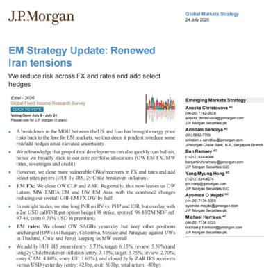
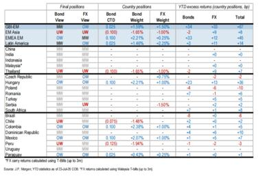
一句话核心：面对油价破百，JPM 给新兴市场的操作建议是「减仓但不清仓」，中国被评为中性——既不是最大输家也不是最大赢家。
背景与关键数据：几个术语拆解——
- EM（Emerging Markets）：新兴市场，指中国、印度、巴西、印尼、南非等发展中经济体。
- 高 Beta 头寸：Beta 衡量一个资产相对大盘的波动放大倍数。高 Beta = 涨的时候涨更多、跌的时候跌更惨，对冲击最敏感、最脆弱。油价冲击来临时，先砍这些。
- 高 Carry 资产：Carry（套息）指持有该资产本身就能赚的利息/利差收益。高 Carry = 「拿着就有稳定现金流」的资产，抗跌，所以保留。
- MW（Marketweight）：中性配置，即「和基准指数一样的权重」，不超配也不低配。对应的还有 OW（Overweight，超配）和 UW（Underweight，低配）。
策略核心：「Trim, don't retreat」（修剪，而非撤退）——砍掉最脆弱的高 Beta，留住有现金流的高 Carry，再用利率、通胀、期权做对冲。对中国债券和汇率都给「中性」。
图片解读：
- 图 1（post5_img1）：JPM 7 月 24 日《EM Strategy Update：Renewed Iran tensions》研报首页，逐条列出对拉美（巴西、智利、哥伦比亚）、亚洲（泰国、菲律宾、印尼、马来西亚）等国的具体仓位调整。
- 图 2（post5_img2）：一张各国最终仓位表。列出每个国家的债券观点（Bond View）、汇率观点（FX View）和年初至今超额收益。可以看到 GBI-EM（新兴市场债券指数）整体给 MW；拉美债券偏 OW（超配）；中国（China）债券和汇率都是 MW（中性），与帖子文字一致。表格右侧的 YTD 超额收益显示拉美（+34/+33）表现最好。
为什么重要 / 对市场和经济的含义：这是「大机构如何把宏观判断转成实盘操作」的教科书式示范。它告诉普通投资者：面对油价这种外部冲击，专业玩家不是「一刀切清仓」，而是分层处理——先降低整体风险敞口，再在内部做结构优化（弃弱守强），最后用衍生品兜底。对中国给「中性」也是个有意思的判断：中国是原油进口大国（油价涨本该是受害者），但 JPM 认为其内部因素（政策、估值）足以对冲，所以不悲观也不乐观。
延伸知识：「高 Beta vs 高 Carry」是资产配置里非常实用的一对概念，可以类比理解：高 Beta 像冲浪板——浪大时爽、浪塌时最先摔；高 Carry 像收租的房子——不指望暴涨，但每月有稳定进账、心里踏实。在不确定性上升的环境里，专业资金普遍会「从冲浪板换到收租房」，这就是所谓的**risk-off（避险）**调仓逻辑。
帖 6 · 16:28 · #其他国家经济 — 对冲基金两年来最看空加元
帖子原文
bloomberg：对冲基金自 2024 年以来对加元最为看空，本周早些时候，特朗普政府誓言将对部分加拿大商品征收新的 50% 关税，原因是他们称美国的酒精、汽车和乳制品受到不公平对待。#其他国家经济
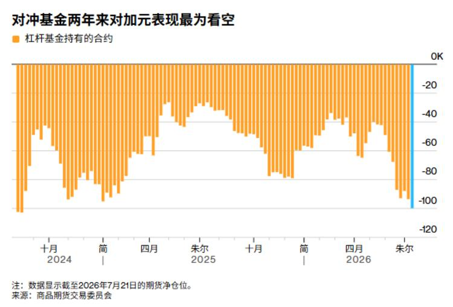
一句话核心：特朗普威胁对加拿大商品加征 50% 关税，吓得对冲基金把加元空头仓位堆到两年新高。
背景与关键数据：
- 加元（CAD）：加拿大货币。加拿大经济高度依赖对美出口（美国是其最大贸易伙伴），所以美加贸易关系一紧张，加元就承压。
- 看空 / 空头（Short）：预期资产会跌，通过做空来押注下跌。「对冲基金对加元最看空」= 它们押注加元会贬值的仓位达到了 2024 年以来最大。
- 导火索：特朗普政府扬言对部分加拿大商品加征 50% 关税，理由是美国的酒精、汽车、乳制品在加拿大受到「不公平对待」。
图片解读：这是一张 bloomberg 的柱状图，标题《对冲基金两年来对加元表现最为看空》。橙色柱子代表杠杆基金（对冲基金）持有的加元期货净仓位，横轴是时间（2024 年 10 月 → 2026 年 7 月），纵轴是合约数量（0 到 -120K，全部在零线以下=全程净看空）。可以看到柱子几乎一直在负值区间波动，而最右端（2026 年 7 月 21 日）的负值柱子明显最长，逼近 -100K，即空头仓位达到近两年最极端水平。数据来源是美国商品期货交易委员会（CFTC）。
为什么重要 / 对市场和经济的含义：
- 关税作为武器：这条延续了特朗普「关税外交」的打法——连盟友加拿大也不放过，反映贸易保护主义在升级，对全球供应链和汇率都是扰动源。
- 仓位的两面性：极端的空头仓位是把双刃剑。它反映市场情绪极度悲观；但也埋下了**「空头回补」（short squeeze）**的隐患——一旦利空出尽或谈判缓和，大量空头集中平仓反而会推动加元急涨。所以「拥挤的交易」本身就是风险信号。
延伸知识：CFTC 每周发布的 COT 报告（Commitments of Traders，交易者持仓报告），是观察市场情绪的经典工具。它把期货持仓拆成商业机构（套保盘）、大型投机者（对冲基金）、散户等，让你看到「聪明钱」在押什么方向。当某个方向的投机仓位极度拥挤（像现在的加元空头），逆向投资者反而会警惕——因为极端一致的预期，往往是反转的前兆。这就是「当所有人都站在船的一侧，船就要翻了」的道理。
帖 7 · 16:27 · #股市 — 高盛：AI 风险的两种类型
帖子原文
高盛：AI 风险其实有两种完全不同的类型：① Size of the Pie：AI 最终创造的总价值没有市场想象得那么大；② Share of the Pie：AI 创造的总价值没有减少，但赚钱的人变了。这两种风险对标普 500、英伟达、Hyperscalers、美债、VIX 甚至亚洲科技股的影响完全不同。我们认为，目前很多所谓"AI 利空"其实只是第二种——利润重新分配，而不是 AI 经济价值消失。 我们此前做过一个很有意思的估值方法：AI 最终能给整个美国经济创造多少额外 GDP 和企业利润？然后把这些未来收益折现成今天的价值，也就是：Present Discounted Value，PDV，再拿这个数字和 AI 相关股票已经增加的市值相比。……我们估算基准情景下，美国企业未来从 AI 获得的收益现值大约 9 万亿美元。最乐观组合可以达到 28 万亿美元。与此同时，从 2022 年 11 月底到 2026 年 7 月 22 日：S&P 500 总市值增加约 31 万亿美元；而高盛 AI 科技篮子 + 私人 AI 公司的估值增加约 26 万亿美元。…… "蛋糕分配风险"。最好的对冲可能不是买黄金、买美债。而是做相对价值。……AI 投资逻辑已经进入第二阶段——AI 成功以后到底谁赚钱？部分今天估值最高的 AI 股票未必是最大赢家。#股市
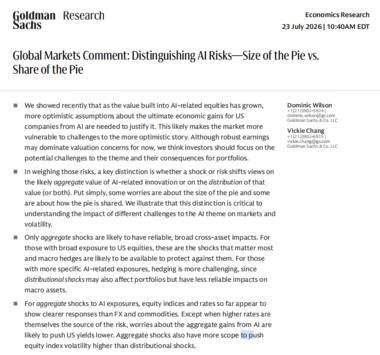
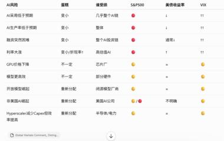
一句话核心：高盛把 AI 风险拆成「蛋糕做多大」和「蛋糕怎么分」两类，并警告——当前市场估值已经透支了最乐观的假设。
背景与关键数据：核心是两个风险概念——
- Size of the Pie（蛋糕大小）风险：AI 最终创造的总经济价值可能没那么大。这是系统性风险，一旦兑现，AI 相关的一切（英伟达、云厂商、美股、甚至美债）会一起跌，很难对冲。
- Share of the Pie（蛋糕分配）风险：蛋糕总量没缩水，但谁能吃到那块变了。这是结构性/相对价值风险，会分化——有人涨有人跌，反而可以通过「多赢家、空输家」来对冲。
高盛的估值方法叫 PDV（Present Discounted Value，未来收益现值）：把 AI 未来能给美国经济带来的所有额外利润，用折现率换算成「今天值多少钱」。关键数字对比：
- AI 未来收益现值：基准情景约 9 万亿美元，最乐观约 28 万亿美元。
- 实际市值增长（2022/11 – 2026/7/22）：标普 500 市值 +约 31 万亿；高盛 AI 篮子 + 私人 AI 公司 +约 26 万亿。
这个对比是关键：股票已经涨出来的市值（26-31 万亿），已经逼近甚至超过了「最乐观情景」的理论价值上限（28 万亿）。换句话说，当前估值只有在「AI 采用极快 + 生产率暴涨 + 企业能拿走大部分收益」全部成真时才说得通。
图片解读：
- 图 1（post7_img1）：高盛 7 月 23 日《Global Markets Comment：Distinguishing AI Risks — Size of the Pie vs. Share of the Pie》研报首页，用英文详述上述两类风险，并指出「分配型冲击」让个股波动率高于指数波动率。
- 图 2（post7_img2）：一张风险影响对照表。行是各种 AI 情景（如「AI 采用低于预期」「AI 生产率低于预期」「融资变得困难」「GPU 降价」「模型更高效」「非美国 AI 崛起」「Hyperscaler 减少 Capex」等），列是对不同资产的影响（重要性、受益者、S&P500、美债收益率、VIX）。用红/黄/绿灯和上下箭头标注。例如「AI 采用低于预期」这种「蛋糕变小」型风险，对标普是明显利空（红灯、↓），VIX 上升（↑）；而「模型更高效/GPU 降价」这种「分配型」风险则是有人受益有人受损（部分资产黄灯）。这张表把抽象的风险类型量化成了「哪种情景对哪个资产是利好利空」。
为什么重要 / 对市场和经济的含义：这是今天最有深度的一帖。它给出的核心判断是：AI 交易已经进入下半场。上半场是「买 AI 就对了」（水涨船高），下半场要问「AI 成功之后，钱到底进谁的口袋」。高盛的操作建议很反直觉——对冲 AI 风险最好的方式不是买黄金/美债（那只对「蛋糕变小」有用），而是做相对价值（比如「多 AI 应用、空 AI 基础设施」，或反过来）。潜台词：今天估值最高的那批 AI 股（可能就是英伟达等卖铲子的），未必是十年后最大的赢家。
延伸知识：「卖铲子 vs 挖金子」是理解科技浪潮利润分配的经典框架。淘金热里，最稳赚的往往是卖铲子、卖牛仔裤、卖水的（对应今天的英伟达、云厂商）。但当基础设施建设见顶、算力变便宜后，利润会从「卖铲子的」向「用铲子挖出金子的」（AI 应用公司）转移。高盛说的「Share of the Pie 风险」，本质就是在提示这个利润迁移的拐点可能正在临近。这也和帖 11 瑞银讲的「Value Maxxing」是同一个主题的两面。
帖 8 · 16:15 · #经济数据 — 汇丰：中国车市需求更弱、继续出清
帖子原文
汇丰：我们把中国 2026 年乘用车销量增速预测从 -5% 下调至 -13%；新能源车销量增速从原来的 +10%，直接下调到 -6%。……1H26 中国乘用车零售 872 万辆同比 -20%。新能源乘用车 470 万辆同比 -14%。……2026 年下半年预计超过 180 款新车型上市。……表面看车企可能不再公开"降价 3 万元"。但现在换了一种方法：同价增配。本质上还是隐性降价。……6 月新能源车平均折扣约 9.1%，燃油车约 23.3%。经销商库存指标 1.5 为警戒线。……目前市场有 162 个左右品牌。前 15 大品牌 1H26 市场份额 60%。2025 为 63%。2024 为 68%。……缩量市场下，继续价格战成为品牌的必选战略。#经济数据
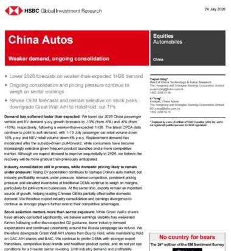
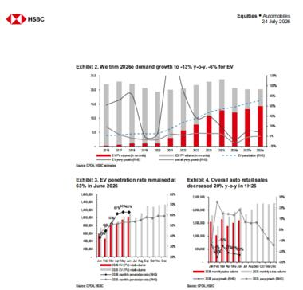
一句话核心：汇丰大幅下调中国车市预期（连新能源都转负），价格战没停只是换了「同价增配」的隐性打法，行业出清远未结束。
背景与关键数据：
- 乘用车 / 新能源车（NEV）销量增速：汇丰把 2026 年乘用车预测从 -5% 砍到 -13%，新能源车从 +10% 砍到 -6%——注意，连一直高歌猛进的新能源都被看衰转负，这是重要转变。
- 1H26（2026 上半年）实绩：乘用车零售 872 万辆（同比 -20%），新能源 470 万辆（同比 -14%），确实很差。
- 技术进步悖论：下半年要上 180 多款新车。消费者会想「现在买，三个月后是不是又出新款、同价更好配置？」于是持币观望，反而抑制当下需求。
- 隐性降价：车企不再明着喊「降价 3 万」，改成「同价增配」（一样的价格给你更多配置），本质还是降价。6 月新能源平均折扣 9.1%、燃油车高达 23.3%。
- 库存警戒线：经销商库存系数 1.5 是警戒线（库存 = 1.5 个月销量）。合资燃油、传统豪华品牌仍明显高于 1.5，说明积压严重。
- 出清未完成：前 15 大品牌市占率从 2024 年 68% → 2025 年 63% → 1H26 的 60%，不升反降。正常「行业出清」应该是份额向头部集中，现在却在分散，说明淘汰赛还没打完。
图片解读：
- 图 1（post8_img1）：汇丰 7 月 24 日《China Autos：Weaker demand, ongoing consolidation》研报首页，标题直译「需求更弱、持续整合」，对长城汽车（Great Wall）A/H 均维持 Hold/低配。
- 图 2（post8_img2）：三张小图。Exhibit 2 是一张柱线组合图，展示把 2026 年需求增速下调到 -13%（整体）、-4%（EV）的过程；Exhibit 3 显示 EV 渗透率 2026 年 6 月维持在 63%（已相当高，进一步提升空间有限）；Exhibit 4 显示 2026 上半年整体汽车零售同比 -20%。三张图共同印证「需求疲弱 + 渗透率见顶」的判断。
为什么重要 / 对市场和经济的含义：
- 通缩的缩影：车市价格战是中国「内卷式通缩」的典型样本——产能过剩 + 需求不足 → 无止境降价 → 全行业利润被压到极薄。这也是宏观上 CPI/PPI 长期低迷的微观来源。
- 投资含义：「选公司，而不是买板块」——在缩量+内卷的市场里，行业整体没有 Beta 机会，只有能活到最后、抢到份额的赢家才有 Alpha。这和高盛「Share of the Pie」是同一种思路：存量博弈时代，关键不是行业涨不涨，而是谁抢到别人的份额。
延伸知识：「技术进步悖论」很值得体会——当一个行业技术迭代太快、新品太密时，消费者的理性选择反而是「等等再买」，因为等一等就能用同样的钱买到更好的东西。这在手机、电脑行业早已上演，现在轮到电动车。它的宏观后果是需求被无限期推迟，加剧通缩。破解之道通常是行业增速放缓、迭代变慢、格局稳定后，消费者才敢「放心下单」——但那往往要以大量厂商出局为代价。
帖 9 · 16:04 · #经济数据 — 崔东树：中国汽车出口爆发，俄罗斯是第一大市场
帖子原文
乘联会崔东树：2026 年 1-6 月中国汽车实现出口 531 万辆，同比 2025 年同期增速 53%，6 月中国汽车实现出口 107 万辆，同比增 73%……今年的主要动力仍是高油价和中国产品竞争力提升和全球南方国家市场的持续增长。也是国内市场低迷，企业对应海外市场动力和能力增强。 2026 年 6 月中国汽车出口总量的前 10 国家：俄罗斯 84451 辆、英国 62487 辆、澳大利亚 60510 辆…… 2023 年以来俄罗斯大部分时间是中国汽车出口第一大市场。#经济数据
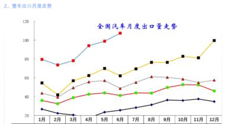
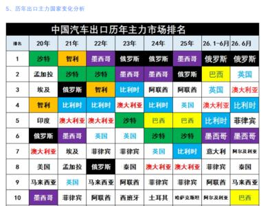
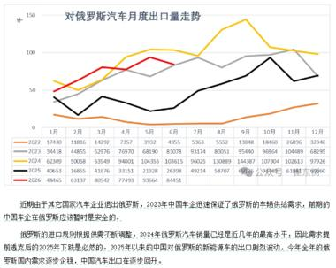
一句话核心：内需越冷，出口越猛——中国车企 1-6 月出口 531 万辆暴增 53%，俄罗斯稳居第一大出口市场。
背景与关键数据：这一帖和帖 8 是一体两面：国内车市萎缩（帖 8），逼着车企拼命向海外找出路（帖 9）。
- 出口实绩：1-6 月 531 万辆（同比 +53%），6 月单月 107 万辆（同比 +73%、环比 +8%）。
- 三大动力：高油价（推高全球对省油/电动车的需求）、中国产品竞争力提升、全球南方国家（发展中国家）市场增长。加上国内低迷倒逼出海。
- 市场分布：6 月前三是俄罗斯（8.4 万）、英国（6.2 万）、澳大利亚（6.1 万）；俄罗斯自 2023 年起长期是第一大市场。
图片解读：
- 图 1（post9_img1）：《整车出口月度走势》折线图。多条彩线代表不同年份（2022-2026），横轴 1-12 月，纵轴出口量（万辆，0-120）。最上方的蓝线（2026 年）明显高出历年一大截，且逐月攀升到 100 以上，直观展示出口的「历史新高」态势。
- 图 2（post9_img2）：一张彩色的《中国汽车出口历年主力市场排名》表格，列出 2020-2026 年每年前十大出口目的国。可以看到俄罗斯（红色标注）从 2022 年起爬升到榜首并长期霸榜；墨西哥、比利时、澳大利亚、英国等常年在列；沙特、智利等则逐渐后移。颜色编码让「谁上位、谁掉队」一目了然。
- 图 3（post9_img3）：《对俄罗斯汽车月度出口量走势》折线图 + 数据表。红/黑线（2025/2026）显示对俄出口先高后有回落迹象。配文点出：俄罗斯需求正在见顶回落——2024 年是对俄出口最高点，2025 年后逐步回落，2026 年继续下行。提示这个「第一大市场」的增长动能在减弱。
为什么重要 / 对市场和经济的含义：
- 出口是内需的泄压阀：中国制造业产能远超国内消化能力，出口成了消化过剩产能、维持工厂开工的关键。这也是全球「中国产能过剩→贸易摩擦」争论的根源（呼应帖 6 加拿大关税、帖 3 美欧摩擦）。
- 地缘红利：西方车企撤出俄罗斯后，中国车企填补了真空，吃到了地缘政治的「份额红利」。但图 3 提示这块红利正在见顶，未来出口增长要靠开拓「全球南方」新市场。
- 高油价的双重作用：高油价一边压制发达国家买车意愿，一边又提升了对省油/新能源车的相对需求——对中国电动车出口反而是结构性利好。
延伸知识：「全球南方（Global South）」是近年宏观里的高频词，泛指亚非拉的发展中国家。随着发达市场（欧美）对中国商品设置越来越多贸易壁垒，全球南方成了中国出口的「新大陆」——这些国家人口多、城镇化中、价格敏感，恰好匹配中国高性价比制造。理解这个转向，就能明白为什么中国的贸易伙伴结构正在从「欧美主导」向「一带一路 + 全球南方」重心转移，这是未来十年出口叙事的主线之一。
帖 10 · 13:50 · #其他国家经济 — 花旗/JPM/高盛论澳新市场
帖子原文
花旗、JPM、高盛本周对澳新市场看法 #其他国家经济
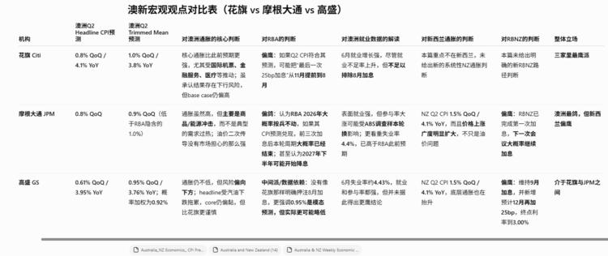
一句话核心：三大行对澳大利亚/新西兰的货币政策路径存在分歧，用一张表把各家对 CPI、央行（RBA/RBNZ）、就业的判断并列对比。
背景与关键数据：
- 澳新市场：澳大利亚（AU）和新西兰（NZ），两个高度依赖大宗商品出口的发达小经济体，其货币（澳元、纽元）常被当作「大宗商品货币」和风险偏好的风向标。
- RBA / RBNZ：澳洲联储 / 新西兰联储。
- CPI：消费者物价指数，判断通胀、进而判断央行降不降息的关键数据。
图片解读：这是一张《澳新宏观观点对比表（花旗 vs 摩根大通 vs 高盛）》。行是三家机构，列包括：澳新 Q2 Headline CPI 预测、Trimmed Mean（核心通胀）预测、对澳洲通胀的核心判断、对 RBA 的判断、对就业的解读、对新西兰的判断、对 RBNZ 的判断、整体立场。要点：
- 花旗：澳 Q2 CPI 约 0.8% QoQ / 4.1% YoY，判断偏鹰（可能最后一次 25bp 加息在 11 月），整体「三家里最鹰派」。
- JPM：认为 RBA 2026 年是最后一次加息，就业表现主导；对 RBNZ 判断 8 月完成最后一次加息——整体「澳偏鹰、新西兰接近加息终点」。
- 高盛：CPI 约 0.61% QoQ / 3.95% YoY，通胀可能低于预期，认为 9 月可能加息、12 月再加——整体「介于花旗与 JPM 之间」。
为什么重要 / 对市场和经济的含义：这张表的价值不在于结论，而在于方法——它示范了如何面对同一组事实（未来 CPI、央行动向），不同顶级机构会因假设不同而给出不同判断。这提醒投资者：没有唯一正确答案，宏观判断本质是概率分布。当三大行都偏「鹰」（倾向加息或维持高利率）时，说明澳新的通胀黏性和货币政策方向已经形成一定共识；分歧只在节奏（几月加、加几次）。对澳元/纽元资产的持有者，这决定了利率路径和汇率走势。
延伸知识：**Trimmed Mean（截尾均值通胀）**是澳洲联储最看重的核心通胀指标。做法是：把一篮子商品的涨跌幅排序，砍掉两端涨跌最极端的部分，取中间的平均。这样能剔除个别商品的暴涨暴跌（比如某次台风导致的菜价飙升），更真实地反映「普遍、持续」的通胀压力。这和美国用 Core PCE（剔除食品能源）是同一个思路——都是为了看清通胀的「底色」，而不被噪音带偏。
帖 11 · 13:42 · #经济数据 — 瑞银：开放模型与「Value Maxxing」
帖子原文
瑞银：过去一个月，科技投资者最关注的两个趋势是：Token 成本优化……和开放模型抢份额，特别是中国开放模型性能越来越接近 OpenAI、Anthropic 的高端模型，但成本低得多。……现在开始变成 Value Maxxing——不是比谁烧 Token 多，而是比每个 Token 创造多少价值。比如一家银行每个月花几十万美元调用最贵的 Claude Opus 模型，但员工拿它问："旧金山最好吃的餐厅是什么？"……所以企业开始做 Model Routing。……我们认为这个逻辑（开源→GPU 需求下降）不成立。开放模型仍然运行在 Nvidia 硬件上。……未来可能出现"百万个专业模型"……AI spending 可能"挤出"传统 IT spending。……这对传统软件未必是好消息。#经济数据
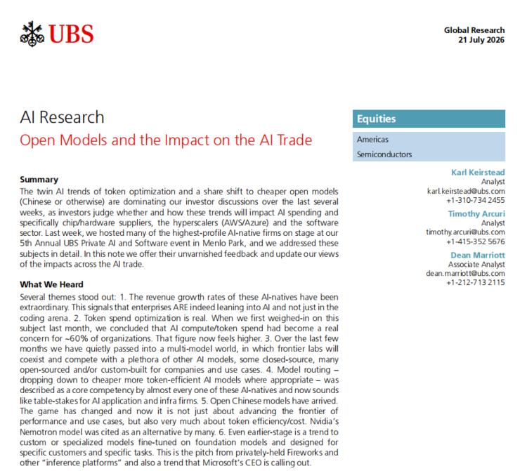
一句话核心：AI 企业采购从「无脑烧钱抢算力」转向「精打细算每一分钱的价值」，开源模型崛起会重新分配需求，但不会削弱英伟达。
背景与关键数据：几个关键概念——
- Token：AI 大模型处理文字的最小计费单位（大致对应「词的碎片」）。用 AI 越多，消耗 Token 越多，花钱越多。
- Token 成本优化：企业发现 AI「越用越贵」，开始控制 Token 消耗。瑞银估计超过 60% 的组织已经开始担心 AI 算力和 Token 成本。
- 开放模型（Open Models）：可免费下载、自行部署的 AI 模型（尤其中国的开源模型），性能逼近顶级闭源模型，但成本低得多。
- Value Maxxing（价值最大化）：新思路——不比谁烧的 Token 多，而比每个 Token 创造多少价值。举的例子很形象：银行花大价钱调用最贵的 Claude Opus，员工却拿它问「旧金山哪家餐厅好吃」——大炮打蚊子，纯浪费。
- Model Routing（模型路由）：像「智能分诊」——简单问题派给便宜小模型，复杂问题才派给昂贵大模型，从而省钱。
- 瑞银的反直觉判断：「开源→模型变便宜→GPU 需求下降」这个逻辑不成立，因为开源模型照样跑在英伟达硬件上，需求只是从贵模型重新分配到高性价比模型，没有消失。
图片解读：这是瑞银 7 月 21 日《AI Research：Open Models and the Impact on the AI Trade》研报首页（Equities / Semiconductors 板块）。Summary 和「What We Heard」部分总结了在瑞银第 5 届私人 AI 与软件大会上听到的六大主题：① AI 原生公司营收增长惊人；② Token 成本优化是真实的；③ 已进入「多模型世界」；④ Model Routing 成为核心竞争力；⑤ 中国开源模型（提到英伟达的 Nemotron 作为替代）到来；⑥ 出现针对特定任务微调的定制/专业模型趋势（点名微软 CEO 也在强调）。
为什么重要 / 对市场和经济的含义：
- 和高盛帖 7 完美呼应：都在讲「AI 的钱怎么分」。瑞银给出更具体的产业观察——利润和需求正在从「最贵的前沿模型」流向「高性价比模型 + 推理平台 + 专业小模型」。
- 对英伟达是「辟谣」：市场担心开源模型会砍掉 GPU 需求，瑞银说不会——这对英伟达是安抚。但对传统软件公司是警告：AI 支出可能「挤出」传统 IT 预算，且前沿模型厂商会向应用层要利润，抢传统软件的饭碗。
- 新赛道：可能崛起「推理平台（Inference Platform）」新行业，专门帮企业选择、部署、优化各种模型——这是投资者可以留意的新方向。
延伸知识：「Model Routing（模型路由）」这个概念，可以类比看病分诊：感冒发烧去社区诊所（便宜的小模型），疑难重症才转三甲医院专家（昂贵的大模型）。过去企业「无论大小病都直奔专家门诊」，既贵又挤；现在学会分诊，成本大降、效率提升。这背后反映的是 AI 从「尝鲜期」进入「精算期」——技术新鲜时大家不计成本地用，成熟后必然回归 ROI（投入产出比）导向。这个转变对整个 AI 产业链的利润分配影响深远，也是判断哪些 AI 公司能长期赚钱的关键视角。
帖 12 · 13:32 · #金融 — 政治局会议：预期「针对性」而非「大水漫灌」
帖子原文
bloomberg：交易员们预计中国政治局会议将通过有针对性的措施支持增长，而非全面刺激方案。一些投资者正在增持金融、保险、医疗和科技股，押注这些方面会加大财政支持。债券交易者预计将有充足的流动性。#金融
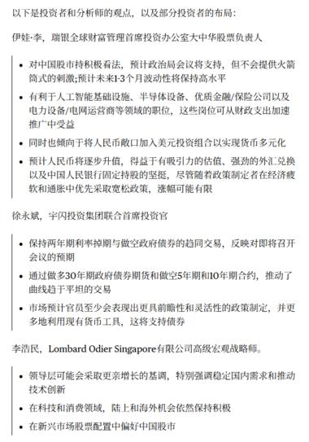
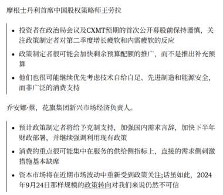
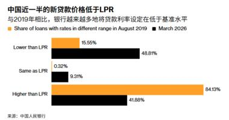
一句话核心：市场预期即将召开的政治局会议只会出「精准滴灌」式的针对性政策，不会有 2024 年「9·24」那样的大规模刺激；聪明钱提前布局金融、医疗、科技。
背景与关键数据：
- 政治局会议：中共中央政治局定期召开的高层会议，通常在季末（如 7 月底）研判经济形势、定调下一阶段政策，是观察中国宏观政策方向的最重要窗口之一。
- 针对性措施 vs 全面刺激：市场预期是前者——「精准滴灌」（定向支持特定领域），而非「大水漫灌」（全面强刺激）。
- 提前布局：部分投资者已在加仓金融、保险、医疗、科技股，押注这些领域会获得更多财政支持；债券交易者则预期流动性充裕（利好债市）。
图片解读：三张图是瑞银、大摩、花旗等机构的中国股票策略负责人的观点集锦。
- 图 1（post12_img1）：瑞银全球财富管理首席投资官办公室中华区股票负责人「伊娃·李」等人的观点。要点：对中国股市持积极看法、预计政治局会议支持但不会「火箭筒式刺激」、看好金融/保险/电力设备等受益于财政支出的板块、预计人民币逐步升值。
- 图 2（post12_img2）：摩根士丹利中国股票策略师王滢，以及花旗新兴市场经济负责人乔安娜·蔡的观点。要点：政策制定者会克制、加快现有政策落实而非推新的补充预算；并特别指出「像 2024 年 9 月 24 日那样规模的政策转向，对我们来说仍然不可信」——即不要指望重现「9·24」级别的强刺激。
- 图 3（post12_img3）：一张关键柱状图《中国近一半的新贷款价格低于 LPR》。对比 2019 年 8 月与 2026 年 3 月，银行贷款利率相对基准（LPR）的分布：
- 低于 LPR：从 2019 年的 15.55% 暴增到 2026 年的 48.81%；
- 等于 LPR：0.32% → 9.31%；
- 高于 LPR：从 84.13% 骤降到 41.88%。 这直观说明：银行越来越多地以「低于基准」的利率放贷。
为什么重要 / 对市场和经济的含义：
- 政策定调：如果政治局只做「针对性」政策，意味着不会有强力总量刺激，对期待「大放水」的股市多头是个预期降温。理解决策层「保持定力、精准施策」的思路，能帮你避免踏错节奏。
- 图 3 的深意：近一半新贷款利率低于 LPR，本质是**实体经济信贷需求疲弱、银行为了放出贷款不惜「价格战」**的信号——和帖 8 车市价格战、宏观通缩是同一个故事的不同侧面。它说明「钱很便宜但没人愿意借」，货币政策传导不畅，这正是决策层需要「针对性」发力的原因。
延伸知识：LPR（Loan Prime Rate，贷款市场报价利率）是中国的贷款基准利率，由一批银行报价形成，是企业和房贷利率的「锚」。正常情况下，银行放贷利率应该在 LPR 之上（加点赚利差）。当出现「近半贷款低于 LPR」时，说明优质借款人稀缺、银行抢着放贷、甚至贴钱也要把贷款投出去——这是典型的「资产荒 + 需求弱」组合。它和西方的「推绳子（pushing on a string）」困境异曲同工：央行可以把利率压低（推绳子的一端），但没法强迫企业和居民去借钱花钱（绳子另一端推不动）。这是理解当前中国货币政策「宽货币、宽信用难」的核心。
帖 13 · 13:27 · #金融 — 特朗普「嘴上 TACO、手上备战」与红海绕行
帖子原文
zerohedge：特朗普低估了难度，承受的内部压力越来越大，可能让他一方面在口头上 TACO，一方面准备更大的打击。TACO 是为了让油价和金融市场保持平稳，打击是为了更好的协议。红海危机后出现了绕行。#金融
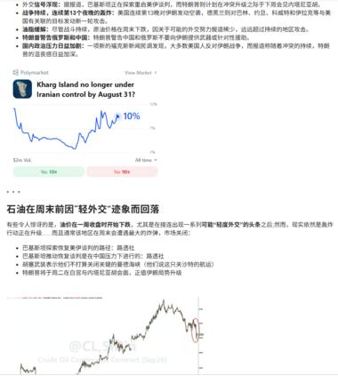
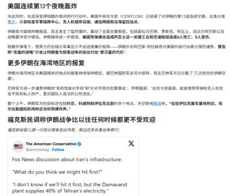
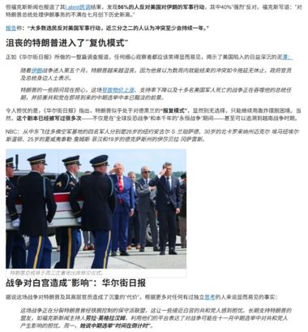
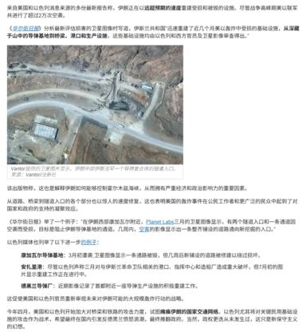
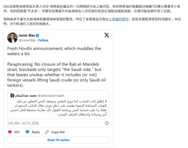
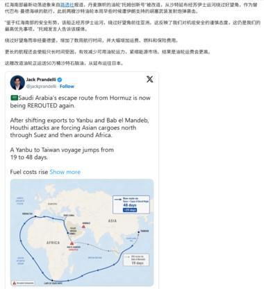
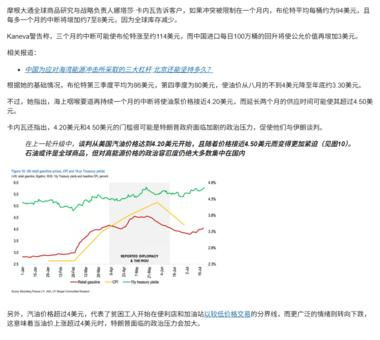
一句话核心：特朗普对伊朗的策略是「口头缓和以稳油价、暗中备战以逼协议」；同时红海危机导致航运被迫绕行好望角，运费和油价供应链风险上升。
背景与关键数据：
- TACO：市场流行的缩写，「Trump Always Chickens Out」（特朗普总是临阵退缩）——指他常常先放狠话、最后又软化，以此稳住市场。这里的逻辑是：特朗普口头 TACO（安抚市场、压住油价），但暗地里准备更大的军事打击，目的是逼伊朗接受「更好的协议」。
- 红海危机 / 绕行：也门胡塞武装袭击红海航运，迫使货轮放弃苏伊士运河捷径，改绕行非洲好望角。这条主线直接关系到全球能源和商品的运输成本。
图片解读（7 张图串起一条完整的地缘叙事）：
- 图 1（post13_img1）：一张 Polymarket 预测市场截图「Kharg Island no longer under Iranian control by August 31?（哈尔克岛 8 月 31 日前是否脱离伊朗控制）」，概率约 10%，配一张原油价格走势图，标题「石油在周末前因'轻外交'迹象而回落」。哈尔克岛是伊朗最重要的原油出口终端，市场在押注它是否会失守。
- 图 2（post13_img2）：讲美国中央司令部（CENTCOM）结束了对伊朗的第 13 次空袭，五角大楼、军事指挥中心、无人机等被提及；配一段 Fox News 关于优先打击伊朗基础设施的讨论（提到 Damavand 电厂供应德黑兰 40% 电力）。
- 图 3（post13_img3）：标题《沮丧的特朗普进入了"复仇模式"》，讲特朗普因战事进展不顺、内部压力上升而态度强硬；配一张特朗普与军方人士在停机坪迎接美军遗体归国的照片。
- 图 4（post13_img4）：一张伊朗山区导弹基地入口的卫星图（Vantor/Planet Labs 提供），讲伊朗正以「远超预期的速度」重建被空袭损毁的导弹和防空设施，说明打击效果有限。
- 图 5（post13_img5）：一条 Javier Blas（能源专栏作家）的推文，「Fresh Houthi announcement」——胡塞新声明含糊其辞，未明确是否封锁曼德海峡、是否只针对沙特货物，让局势更加扑朔迷离；配文提到 WTI 油价一度上涨。
- 图 6（post13_img6）：一条推文配航运绕行地图——沙特从霍尔木兹海峡的「逃生路线」再次被迫改道，货物北上经苏伊士改为绕行非洲，航程从 19 天暴增到 48 天，燃料成本大涨。
- 图 7（post13_img7）：摩根大通的分析——三个月中断可能推油价到 114 美元，中国进口每涨 1 美元约影响公众补贴 3 亿美元；配一张油价 vs 美债收益率的走势图，阴影区标注「Reported Diplomacy & Then Risk」，显示外交进展时油价回落、风险升温时油价反弹。
为什么重要 / 对市场和经济的含义：这是今天「油价主线」的地缘总集篇，把所有引信串在了一起：
- 伊朗风险未消：空袭效果有限（导弹基地快速重建），特朗普「复仇模式」+ 内部压力，意味着冲突可能再升级，随时冲击哈尔克岛这类关键原油终端。
- 航运成本飙升：红海绕行让航程翻倍（19→48 天），这不仅推高运费，还等于变相减少了全球运力、拉长了石油和商品的到货时间——本身就是一种供给端的通胀压力。
- 回到美联储决策树：所有这些都指向同一个结论——地缘风险 = 油价上行风险 = 通胀黏性 = 美联储更难降息（帖 2）。这就是为什么 Jason 今天反复围绕油价展开。
延伸知识：霍尔木兹海峡是全球最重要的能源咽喉——全球约 20-30% 的海运石油要经过这条仅 33 公里宽的水道。伊朗一旦封锁或威胁封锁，油价会瞬间飙升。而**「TACO 交易」**本身也是个有趣的市场现象：因为特朗普屡次「放狠话又收回」，市场逐渐学会「在他喊话时反向操作」（狠话时抄底、退缩时兑现）。但这也埋下危险——当市场笃定他一定会退缩时，他反而可能为了「证明自己不是 TACO」而动真格，这时候押注「他一定退缩」的人就会被反噬。这正是 zerohedge 这条的核心担忧：口头缓和 + 暗中备战，恰恰是最容易被市场低估的组合。
今日全图索引
| 帖号 | 时间 | 主题 | 标签 | 图片文件名 |
|---|---|---|---|---|
| 1 | 17:03 | IMF：主权财富基金规模十年翻倍至 15.82 万亿 | #金融 | post1_img1.png |
| 2 | 17:01 | 大摩：油价决策树，7 月及全年 Hold | #金融 | post2_img1.png |
| 3 | 16:56 | 美国对欧盟启动 301 调查 + 影子油轮 | #其他国家经济 | post3_img1~4.png |
| 4 | 16:49 | 中国对离岸信托开征税 | #TAX | post4_img1.png |
| 5 | 16:44 | JPM：油价破百后 EM「减仓不撤退」，中国中性 | #金融 | post5_img1~2.png |
| 6 | 16:28 | 对冲基金两年来最看空加元（50% 关税威胁） | #其他国家经济 | post6_img1.png |
| 7 | 16:27 | 高盛：AI 风险两类，估值已透支最乐观情景 | #股市 | post7_img1~2.png |
| 8 | 16:15 | 汇丰：中国车市下调至 -13%，价格战延续 | #经济数据 | post8_img1~2.png |
| 9 | 16:04 | 崔东树：中国汽车出口 +53%，俄罗斯第一 | #经济数据 | post9_img1~3.png |
| 10 | 13:50 | 花旗/JPM/高盛论澳新货币政策分歧 | #其他国家经济 | post10_img1.png |
| 11 | 13:42 | 瑞银：开放模型与「Value Maxxing」 | #经济数据 | post11_img1.png |
| 12 | 13:32 | 政治局会议预期「针对性」非「大水漫灌」 | #金融 | post12_img1~3.png |
| 13 | 13:27 | 特朗普「口头 TACO、暗中备战」+ 红海绕行 | #金融 | post13_img1~7.png |
本报告由自动化任务生成，内容基于知识星球「南半球聊财经」星主 Jason 不跪 2026-07-24 当日发帖。图片均为帖内原图。解读为学习性质，不构成任何投资建议。